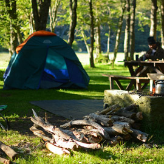

Lago Guillelmo
Pesca, acampe y un merecido descanso.
Este lago, ubicado a 35 kilómetros del centro de Bariloche yendo por la ruta 40 sur, está en las cercanías de Villa Mascardi, un poblado eminentemente turístico, no muy lejano a la ciudad de San Carlos de Bariloche. Es una buena opción para pasar el día, acampar o intentar suerte con la pesca.
Encontrá aguas cristalinas en un lago cuya superficie es un espejo perfecto, en el que se refleja toda la imponente naturaleza que lo rodea.
Para llegar hay que tomar la ruta 40 sur, con rumbo hacia la ciudad de El Bolsón. Transitados unos 35 kilómetros y después de haber pasado los lagos Gutiérrez, primero y Mascardi después, se debe doblar a la izquierda, en Villa Mascardi, a la altura del kilómetro 2003. De este caserío parte un camino angosto de tierra, que hay que recorrer por aproximadamente dos kilómetros para llegar al sector de camping. En la zona de Villa Mascardi se encuentra también el puesto de guardaparques y las indicaciones para llegar al camping Las Carpitas.
Camping
A orillas de este lago de origen glaciar se puede acampar en la zona de camping libre o en el camping Las Carpitas, ubicado entre los lagos Mascardi y Guillelmo. Tiene entrada por la Villa Mascardi, un pequeño caserío donde encontrarás una despensa y un puesto de guardaparques.
Pesca
Se trata de un ámbito ideal para la pesca deportiva de grandes truchas, de hasta 1.5 kg. Para los amantes de la pesca con mosca, un paraíso que merece también ser destino en la agenda a la hora de planificar unas agradables vacaciones.

Cosas a tener en consideración
- No se permite hacer fuego en la zona, por eso para quienes se encuentren en zonas de acampe libre es imprescindible usar calentadores. En este lago no está permitido el uso de embarcaciones con motor.
- Atención: sólo se puede hacer fuego en los lugares permitidos.